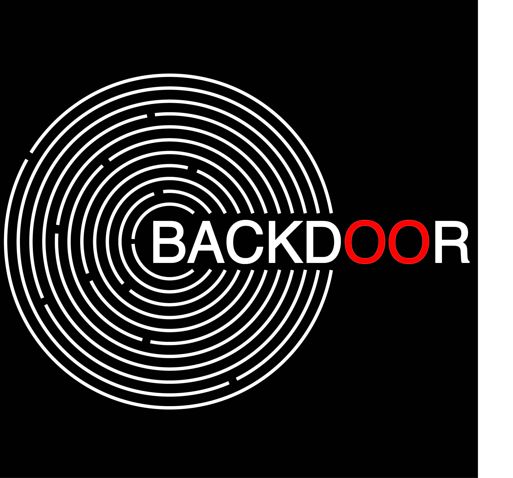

To create concept logo design for the company I took into account the following elements:
As it was mentioned in the brief, the function of record companies has changed dramatically in the past 2 decades with the advancement of technology.
Before the focus of record companies was centered on the physical production of the object, such as fabricating vinyl records or CDs. Today, the task is to assist clients in financing, marketing and distributing their goods. Meanwhile, the iconic objects like vinyl records still serve as representations of music and composition. Thus, imitating vinyl record through the repetition of circles in a geometrical sequence gives an instant understanding that the company is operating in the magnetic sphere of music.
By taking the vision of the company as a core for inspiration, the logo also illustrates a concept of a maze, the entrance of which, the so-called “front door” is sealed. In order to get to the heart of the vinyl record, one can take a more direct and innovative approach by using the BACKDOOR®. The design illustrates the latter concept of our contemporary record company in a simple yet symbolic way.
The principle colors of the logo are B&W. Using black and white gamma provides a modest and, at the same time, powerful spatial perception. Black background enhances the white circumferences of the maze adding depth and complexity to the image. Further developing the concept of vinyl re- cord as the portrayal of music and composition, the usage of red color on the letters “O” serves as a tool to force persons juxtapose the logo and the red center of the vinyl record.